|
|
HELP FIND THE FOLLOWING LOCATIONS
PAGE 54
SABER
OF
LONDON:
The Penny Black (Max Varnel: 1957)
Godfrey
Street, SW3 –
Mark
Saber arrives at the Roberts' stamp shop (12 Godfrey Street)
in Pete's
Vauxhall Victor to interview Mrs. Roberts.
(Identified by Peter Astaire, 18th
April 2012)

Spring
Street, London W2
– Mark Saber
tells Pete to follow
Mr Turner (Robert Ayres) to see who he meets. Pete follows Turner's
taxi to a
street where Turner gets out, goes into a bank and returns to pay off
the taxi
driver. Turner goes into the tobacconists' next door then sets off on
foot.
Pete leaves his Vauxhall Victor and follows.
(Identified by Geoff Dodd, 6th
May 2023)


Porchester Terrace, London, W2 – After
leaving the café Rosie (Jan
Holden) sets off alone. Pete is instructed to follow her (from
Prochester Gardens on to Porchester Terrace) .
(Identified by Sietse Postma, January 2024)

SABER
OF
LONDON:
Saber's Bow and Arrow
(Max Varnel: 1958)
Unknown 1 –The
home of Harold Gregson. Pete Palson (Neil McCallum) and Mark Saber
(Donald
Grey) arrive in Saber's Porsche 356 cabriolet after being summoned by
Gregson.
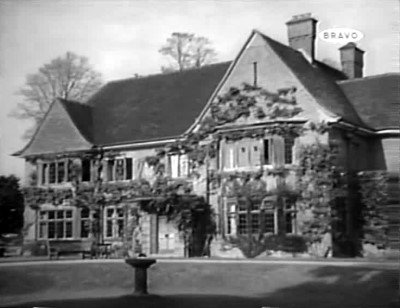
F51:
The
Coach & Horses (public house), The Green, Croxley Green,
Hertfordshire – Linda
(Ann Stephens) and
Frank (Michael Bryant) attempt to get married so they drive to Gretna
Green and
book into an inn. Pete Paulson (Neil McCallum), Mark Saber (Donald
Grey) and
Harold Gregson (Vincent Holman) arrive at the inn looking for Gregson's
daughter in Saber's Porsche 356 cabriolet.
(Identified by Greg Mishevski, 13th April 2012)
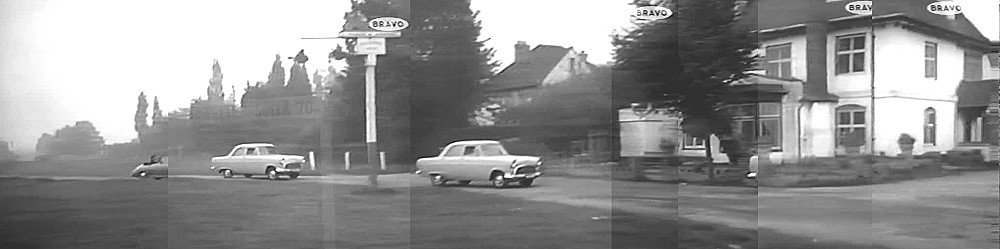
MARK
SABER aka THE VISE aka UNCOVERED: Man on a Cliff
(Ernest Morris: 1957)
Unknown
1 –Stevie Ames
has
to interview everyone in Peter Kenyon's address book, she goes by taxi
to see
Mr. Pierce.
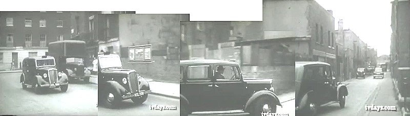
Unknown 2 – Mark Saber drives to the cliff top by Peter Kenyon's house after telling the chief suspects he is about to do so.
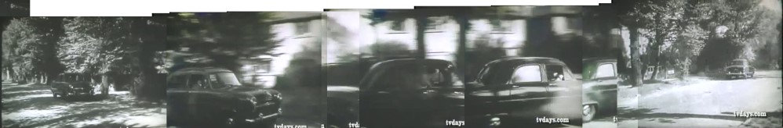
 Lister
cottages, Dagger Lane Elstree?
This would be less than 1km from the Danziger New Elstree Studios.
Lister
cottages, Dagger Lane Elstree?
This would be less than 1km from the Danziger New Elstree Studios.
MARK
SABER aka THE VISE aka UNCOVERED:
It's
Only Mink
(Ernest Morris: 1957)
Grosvenor Street, London W1 – Mark
Saber sends Barney O'Keefe to inquire at all the jewelers to identify
the manufacturer of a
piece
of jewelry he has seen.
(Identified by Sietse Postma, March 2025)
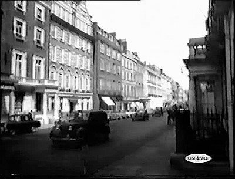
D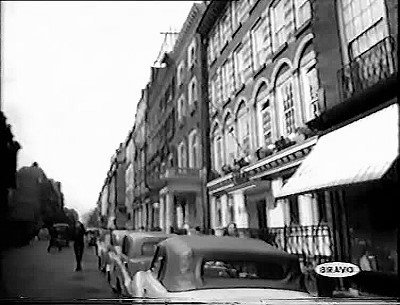
 Probably
near Bond Street.
Probably
near Bond Street.
High Street, Watford – Mark
Saber sends Barney
O'Keefe to inquire at all the jewelers to
identify the manufacturer of a piece of jewelry he has
seen (High Street/Exchange Road, Watford).
(Identified by Sietse Postma, March 2025)
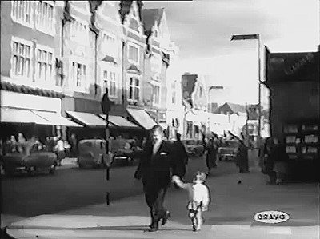
MARK
SABER aka THE VISE aka UNCOVERED: Death Needs No
Cane
(Splinters
Deason: 1956)
Rue Saint-Vincent, Paris, Île-de-France, France
– Establishing
shot of Paris where the engraver Pierre Bouchalon meets
with the forgery
mastermind.
(Identified by Sietse Postma, January 2024)

Unknown 1 – Mark Saber and Barney O'Keefe accompany Inspector Chester to the flat of the murdered Joseph Stuart, truck driver.

SABER
OF
LONDON: Strong Man Out (Max
Varnel: 1959)
Lancaster
Gate, W2 – A
man dressed as a guard and another steal the payroll of the Diamond
Manufacturing Company (22 Lancaster gate) administration office - a
third man
attempts to prevent the robbery but is fought off. The two robbers get
into the
car and drive off (the memorial cross was moved after it was
damaged by the
1987 storm).
(Identified by Peter Astaire, 18th
April 2012)

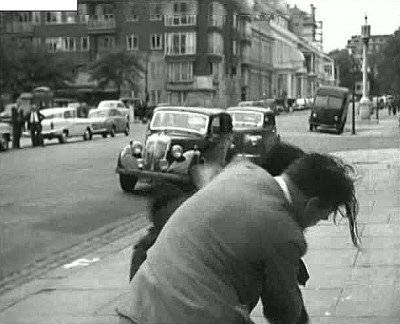
The Chelsea Wing of the Royal Brompton
Hospital –Mark
Saber (Donald Grey)
goes to the The Diamond Manufacturing Company administration office
Building to
investigate the robbery. For some reason he spends some time examining
Pete's Vauxhall Victor.
(Identified by Geoff Dodd, April 2024)**
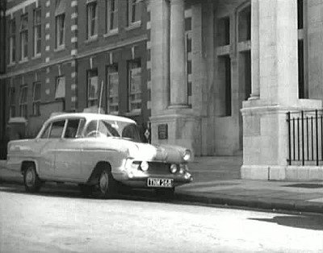
Leinster
Gardens, London, W2
– Pete
Paulson goes by taxi
to visit John Rogers at his home as he is the only suspect they have.
(Identified by Geoff Dodd, April 2023)
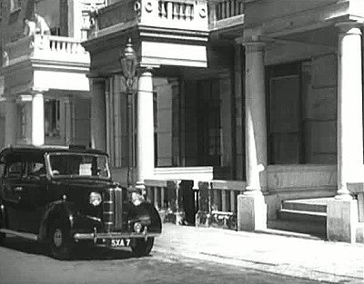
Daily Mirror Offices, Geraldine House, Fetter Lane, London EC4 – Mark Saber visits the offices of the Daily Mirror to identify the clipping missing from a newspaper.
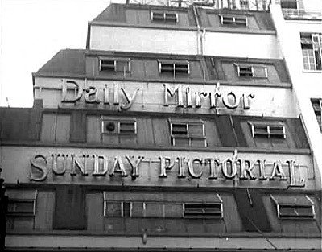
Daily Mirror Offices, Geraldine House, Fetter Lane, London – Mark Saber (Donald Grey) arrives at the offices of the Daily Mirror, in his Porsche 356 cabriolet, to identify the clipping missing from a newspaper.
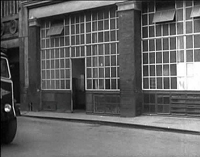
 Daily
Mirror/Sunday Pictorial building, Geraldine House, Fetter Lane, EC4?
Also seen as stock shot in other episodes - so could be anywhere.
Daily
Mirror/Sunday Pictorial building, Geraldine House, Fetter Lane, EC4?
Also seen as stock shot in other episodes - so could be anywhere.
Unknown 4 –Mark Saber and Pete Paulson go to the midnight show at the The Mayfair Night Club in Pete's Vauxhall to interview Rita Miller.
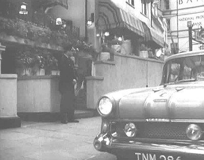
Wormwood Scrubs- Mark Saber and Pete Paulson go to visit Peter Bond (John McLaren) at Wormwood Scrubbs in Pete's Vauxhall. Later Peter Bond is released from prison.
11
Craven
Terrace, W2 – Mark
Saber and Pete Paulson arrrive in
Pete's Vauxhall Victor to visit the café managed by Ben
Chou (11
Craven Terrace) to find out where he got the money he had
recently
deposited.
(Identified by Greg Mishevski, 7th April 2012)
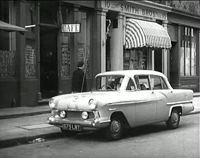
Unknown 5 – Inspector Stewart takes Mark Saber and Pete Paulson to the home of Serge Bersuk to arrest the last member of the gang.
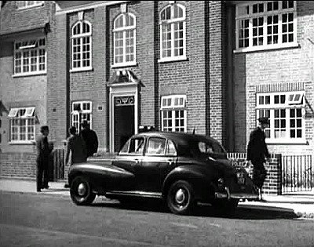
MARK
SABER aka THE VISE aka UNCOVERED: Hear No Evil
(Ernest Morris: 1958)
'Lorraine'
(Hyver Manor), Hyver Hill, Sterling Corner – The home of the
invalid
Miriam Booth which she shares with her relations.
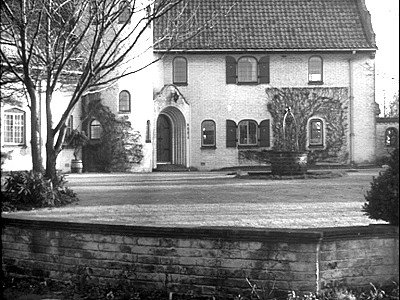
Barnet
Road/Wagon Road, Bentley Heath – Mark Saber drives Barney and
Judy to see their new client,
Miriam Booth, who lives in a large house on the east coast.
(Confirmed by Geoff Dodd)

MARK
SABER aka THE VISE
aka UNCOVERED: Murder
for Gain (Ernest Morris:
1957)
Viceroy
Court, Prince Albert Road, NW8
- Mark Saber drives to interview
Miss Norma Ward at her flat with Barney O'Keefe, his asistant.

Unknown 1 –Mark Saber takes Barney O'Keefe with his to interview the staff at the hospital about Mrs Wright's death.
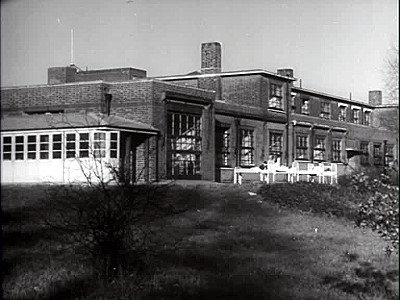
SABER
OF
LONDON: Come Out
Fighting (Godfrey
Grayson: 1960)
Strand, WC2 –
Johnny French is training in a London gym (Strand
junction
with Agar Street)
with his trainer
'Irish' Clancy.
(Identified by "Mark O" of the Britmovie forum, 30th
November 2011)
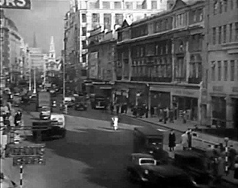
Cromwell Road, SW7 – The Buckingham Hotel (97 Cromwell Road, demolished and replaced by a Holiday Inn, the houses on the opposiite side of the road are the same design) the hotel being used by Johnny French and 'Irish' Clancy.
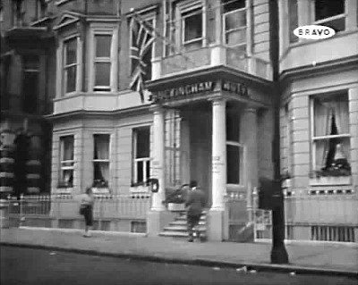
Piccadilly Circus – It was unusual for Johnny French to go out the night before a fight, so Clancy decided to follow Johnny.
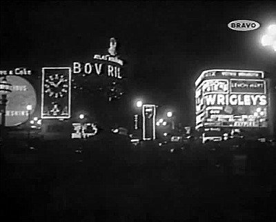
Marble Arch, W1 – .Mark Saber goes to interview Harry Neville about Johnny French's fight with Karminski
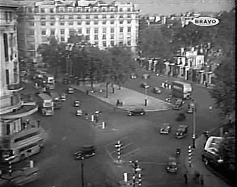
Daily Mirror Offices, Geraldine House, Fetter Lane, London – Mark Saber (Donald Grey) arrives at the offices of Harry Neville to interview him about Johnny French's fight with Karminski.
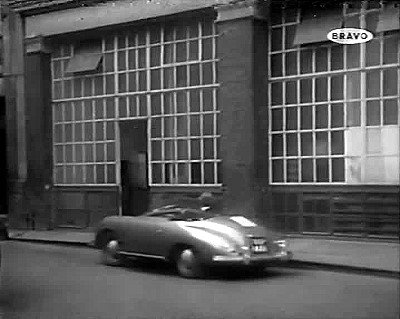
 Daily
Mirror/Sunday Pictorial building, Geraldine House, Fetter Lane, EC4?
Also seen as stock shot in other episodes - so could be anywhere.
Daily
Mirror/Sunday Pictorial building, Geraldine House, Fetter Lane, EC4?
Also seen as stock shot in other episodes - so could be anywhere.
Unknown 3 – Mark Saber (Donald Grey) went to see Joe Ward the bookmaker, but he was out. Next stop was the Athletic Club.
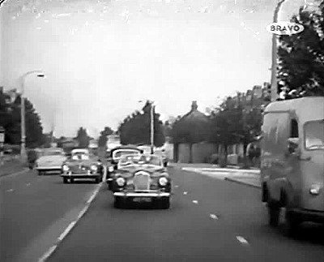
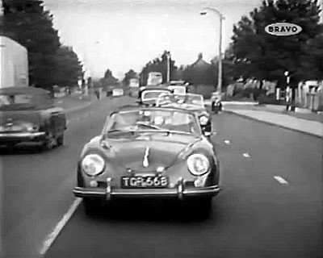
Q39: Station Road, Edgware – After
leaving the Athletic
Club Mark Saber (Donald Grey) drives off to see Joe Ward the bookmaker
again.
(Identified by Mark Amies, August 2025)
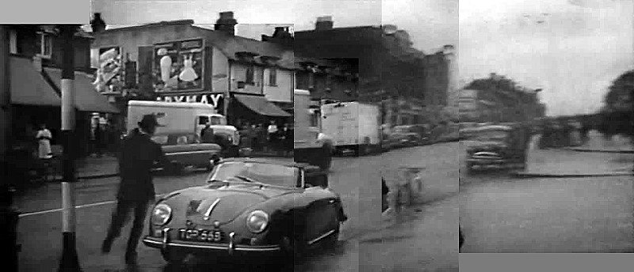
Q39: Station Road/Hale Lane, Edgware, HA8 – After failing to find Joe Ward in his office (Natwest Bank, Penshurst Gardens/Hale Lane) Mark Saber (Donald Grey) drives off to see the bookmaker in his 'usual haunts'.
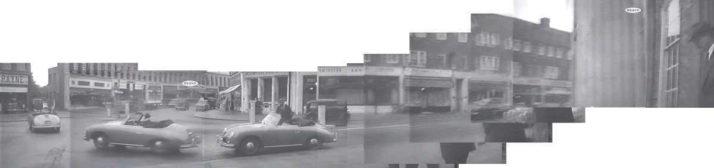
Lancaster
Gate, W2 – Mark
Saber (Donald Grey) drives to Chatsworth Court (100
Lancaster Gate)
looking for Joe Ward the bookmaker.
(Identified by Peter Astaire, 18th
April 2012)
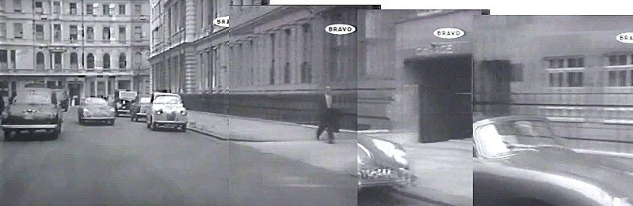
Neville Terrace, London SW7 –Mark
Saber (Donald Grey) at
last finds Joe Ward and gets the information he has been seeking.
(Identified by Allen Dace, August 2025)
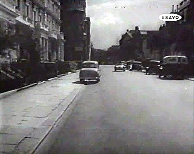
Roland Gardens SW7, London – Mark
Saber (Donald Grey) at
last finds Joe Ward and gets the information he has been seeking.
(Idenified by Goff Dodd, June 2024)

Henly's
Roundabout, Hounslow
–Mark
Saber (Donald Grey)
races to the ringside to get things straight between Johnny and Clancey.
(Identified by Alan Field, June 2023)
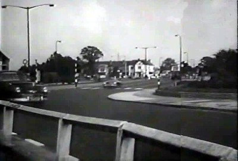
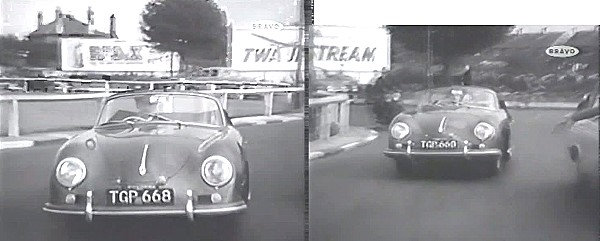
Unknown 7 –Mark Saber (Donald Grey) races to the ringside to get things straight between Johnny and Clancey.
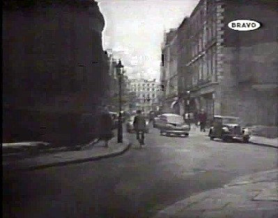
Think you know a spot? Need a bigger image? Email me.
< Previous | Index | Avengerland | Next >
Copyright © 2023 Anthony R. McKay